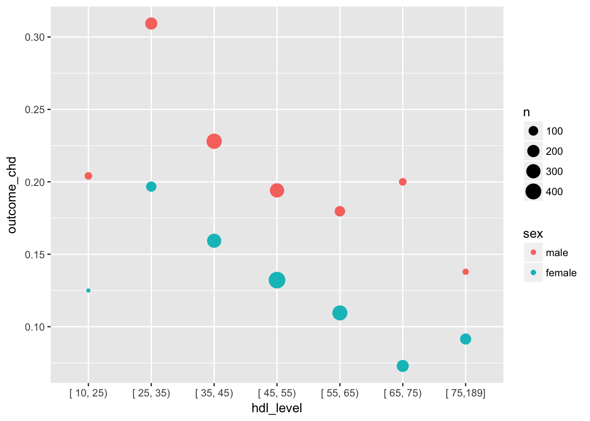

The Framingham Heart Study led to the publication of more than 3,000 journal articles, the most highly cited of which is Gordon et al. Am J Med 1977, a seminal paper that linked high HDL cholesterol with lower risk for CHD.
We will be using a data set made available by the National Heart, Lung, and Blood Institute (NHLBI) that summarizes clinic visit data (history, physical, labs) as well as long-term outcomes for participants of the study. A code book that explains the study design, each variables, and its values can be found here.
For the sake of simplicity, we will use a truncated data set containing only the data from one examination period and a reduced number of columns. The variable (column) names have also been edited for clarity.
We will write a literate program that uses data from the Framingham study to examine whether we can reproduce the link between HDL cholesterol and outcomes such as CHD or death from any cause.
Please note that this data has been treated with statistical methods designed to protect patient confidentiality while largely (but not fully) preserving the structure of the data. Analyses derived from this data are therefore unsuitable for publication.
When R “knits” the document the commands in the following code chunk will be executed, installing and loading any missing packages. It is a good idea to include code that makes sure all dependencies are met so that others (or future-you) can reproduce the analysis.
You will probably also want to run this code now to make sure you have all the packages installed to run all of the code in the remaining code chunks. To run a code chunk click the little green arrow on the top right of the code chunk. Do it now!
if (!require("pacman")) install.packages("pacman")
pacman::p_load(Hmisc, tidyverse, downloader, readxl, ggplot2)
detach("package:Hmisc", unload=TRUE) # prevent Hmisc from overwriting summarize()Download framingham.xlsx from the course website. (Run the code chunk!)
download("https://skadauke.github.io/cdar_course/framingham.xlsx",
destfile = "framingham.xlsx")Then load the file into a data frame named framingham. If you run the code chunk, framingham will be available in your environment. This makes it possible to “play” with the data as you are developing your literate program.
framingham <- read_excel("framingham.xlsx")As you “get to know” a new data set, it is a great idea to jot down observations about the data set in the text of a literate program. So let’s look at the data and take some notes.
First let’s examine the structure of the framingham data using the str() function. Write your code inside the code chunk below. Remember that you can run the code chunk by clicking the little green arrow on the top right of the code chunk.
# YOUR CODE HERE
str(framingham)## Classes 'tbl_df', 'tbl' and 'data.frame': 3263 obs. of 14 variables:
## $ id : num 2448 6238 11252 11263 12806 ...
## $ age : num 52 58 58 55 57 64 55 62 53 51 ...
## $ sex : num 1 2 2 2 2 1 1 2 2 2 ...
## $ current_smoker : num 0 0 1 0 1 0 0 0 0 1 ...
## $ history_htn : num 0 0 1 1 0 1 1 0 1 1 ...
## $ history_chd : num 0 0 0 0 0 0 0 0 0 0 ...
## $ history_diabetes : num 0 0 0 1 0 0 0 0 0 0 ...
## $ bmi : num NA 28.5 24.6 31.2 22 ...
## $ total_chol : num 209 237 NA 220 320 280 211 291 159 264 ...
## $ hdl : num 31 54 NA 46 34 44 48 60 53 58 ...
## $ ldl : num 178 141 NA 135 286 236 163 217 106 206 ...
## $ outcome_any_chd : num 1 0 0 1 0 0 0 0 0 0 ...
## $ outcome_stroke : num 0 0 0 0 0 0 0 0 0 0 ...
## $ outcome_death_any_cause: num 0 0 0 0 0 0 0 0 1 1 ...Look at the output above and consider the following questions:
How many rows does the table have? How many columns?
Do the column names make sense?
How is “any CHD” defined? (Where could you look this up?)
Do you think each row corresponds to a patient in the study? (Where could you look this up?)
Are there any columns with missing values?
According to the code book for this data set, sex is coded as follows:
1 = male
2 = femaleIt is a good idea to make the data as self-explanatory as possible. We will therefore recode the sex column as a factor variable (R’s representation of an unordered categorical variable) with the two levels male and female.
framingham <- framingham %>%
mutate(sex = recode_factor(sex,
`1` = "male",
`2` = "female"))
str(framingham)## Classes 'tbl_df', 'tbl' and 'data.frame': 3263 obs. of 14 variables:
## $ id : num 2448 6238 11252 11263 12806 ...
## $ age : num 52 58 58 55 57 64 55 62 53 51 ...
## $ sex : Factor w/ 2 levels "male","female": 1 2 2 2 2 1 1 2 2 2 ...
## $ current_smoker : num 0 0 1 0 1 0 0 0 0 1 ...
## $ history_htn : num 0 0 1 1 0 1 1 0 1 1 ...
## $ history_chd : num 0 0 0 0 0 0 0 0 0 0 ...
## $ history_diabetes : num 0 0 0 1 0 0 0 0 0 0 ...
## $ bmi : num NA 28.5 24.6 31.2 22 ...
## $ total_chol : num 209 237 NA 220 320 280 211 291 159 264 ...
## $ hdl : num 31 54 NA 46 34 44 48 60 53 58 ...
## $ ldl : num 178 141 NA 135 286 236 163 217 106 206 ...
## $ outcome_any_chd : num 1 0 0 1 0 0 0 0 0 0 ...
## $ outcome_stroke : num 0 0 0 0 0 0 0 0 0 0 ...
## $ outcome_death_any_cause: num 0 0 0 0 0 0 0 0 1 1 ...Next, let’s use the summary() function on framingham to create a brief statistical summary of the distribution of data in each of its columns. Write your code below and run the code chunk.
# YOUR CODE HERE
summary(framingham)## id age sex current_smoker
## Min. : 2448 Min. :44.00 male :1387 Min. :0.0000
## 1st Qu.:2509944 1st Qu.:54.00 female:1876 1st Qu.:0.0000
## Median :5050572 Median :60.00 Median :0.0000
## Mean :5028933 Mean :60.65 Mean :0.3435
## 3rd Qu.:7501310 3rd Qu.:67.00 3rd Qu.:1.0000
## Max. :9999312 Max. :81.00 Max. :1.0000
##
## history_htn history_chd history_diabetes bmi
## Min. :0.0000 Min. :0.0000 Min. :0.00000 Min. :14.43
## 1st Qu.:0.0000 1st Qu.:0.0000 1st Qu.:0.00000 1st Qu.:23.19
## Median :1.0000 Median :0.0000 Median :0.00000 Median :25.46
## Mean :0.5991 Mean :0.1103 Mean :0.07784 Mean :25.89
## 3rd Qu.:1.0000 3rd Qu.:0.0000 3rd Qu.:0.00000 3rd Qu.:28.06
## Max. :1.0000 Max. :1.0000 Max. :1.00000 Max. :56.80
## NA's :17
## total_chol hdl ldl outcome_any_chd
## Min. :112.0 Min. : 10.00 Min. : 20.0 Min. :0.0000
## 1st Qu.:206.0 1st Qu.: 39.00 1st Qu.:145.0 1st Qu.:0.0000
## Median :234.0 Median : 48.00 Median :173.0 Median :0.0000
## Mean :236.7 Mean : 49.36 Mean :176.5 Mean :0.2596
## 3rd Qu.:264.0 3rd Qu.: 58.00 3rd Qu.:205.0 3rd Qu.:1.0000
## Max. :625.0 Max. :189.00 Max. :565.0 Max. :1.0000
## NA's :214 NA's :236 NA's :237
## outcome_stroke outcome_death_any_cause
## Min. :0.00000 Min. :0.0000
## 1st Qu.:0.00000 1st Qu.:0.0000
## Median :0.00000 Median :0.0000
## Mean :0.08673 Mean :0.2375
## 3rd Qu.:0.00000 3rd Qu.:0.0000
## Max. :1.00000 Max. :1.0000
## Look at the output of summary and consider the following questions:
Are men and women equally represented in the study?
What proportion of participants were smokers at the time of enrollment?
What proportion had CHD at enrollment?
What proportion of participants had developed CHD at the end of the follow up period?
What proportion of participants died?
What proportion of participants are at risk of developing CHD?
Hint: You don’t need to enter any additional R code to answer these questions. Take a look at the output of the summary() command and remember that if the values of a vector are only 0 and 1 ( or TRUE and FALSE), the mean of the vector is equal to the proportion of values that are 1 (or TRUE).
From the above look at the data, it appears that a number of rows are missing HDL cholesterol data. To be exact, there are a total of 236 rows with missing HDL data.
Let’s figure out what the proportion of rows that have missing data in teh hdl columns of the framingham data frame. Write your code below and run the code chunk.
# YOUR CODE HERE
mean(is.na(framingham$hdl))## [1] 0.07232608Before we continue, let’s remove any rows that don’t have a value for hdl and store the filtered data set in the variable hdl_measured. Fill in the blanks below and run the code.
# FILL IN THE BLANKS
hdl_measured <- framingham %>%
filter(!is.na(hdl))Let’s see whether there might be a dose-dependent effect of HDL on all-cause mortality. We will use the powerful split-apply-combine conceptual framework to think through this.
First we need to split the data into several chunks. Since we’re interested in outcomes at different HDL levels, we split the data by HDL level. Say we want to split at a HDL of 25, 35, 45, 55, 65, and 75. The first step is the define a vector cut_points with those numbers. Use the seq() function to create a vector with the above numbers and enter the code in the chunk below.
The mutate() function adds a column hdl_level which identifies in which bin each row should be chunked.
The group_by() function does the actual splitting, by the hdl_level column we just generated.
summarize() then applies the mean() function to outcome_death_any_cause which produces a proportion of deaths at each hdl_level. Afterwards, it combines the resulting data into a new data frame.
Note that the resulting data frame has a completely different structure than the data frame hdl_measured we fed into the pipeline. This is typical of split-apply-combine workflows.
# FILL IN THE BLANKS
cut_points <- seq(25, 75, by=10)
hdl_measured %>%
mutate(hdl_level = Hmisc::cut2(hdl, cut_points)) %>%
group_by(hdl_level, sex) %>%
summarize(death = mean(outcome_death_any_cause))## Source: local data frame [14 x 3]
## Groups: hdl_level [?]
##
## # A tibble: 14 x 3
## hdl_level sex death
## <fctr> <fctr> <dbl>
## 1 [ 10, 25) male 0.3064516
## 2 [ 10, 25) female 0.2222222
## 3 [ 25, 35) male 0.3264463
## 4 [ 25, 35) female 0.2269504
## 5 [ 35, 45) male 0.3548387
## 6 [ 35, 45) female 0.2055215
## 7 [ 45, 55) male 0.2346041
## 8 [ 45, 55) female 0.1391129
## 9 [ 55, 65) male 0.3333333
## 10 [ 55, 65) female 0.1760000
## 11 [ 65, 75) male 0.3272727
## 12 [ 65, 75) female 0.1707317
## 13 [ 75,189] male 0.2812500
## 14 [ 75,189] female 0.1790123Modify the above code to break the data down by
sexin addition tohdl_level
Does it look like HDL is a good predictor of all-cause mortiality?
We’d like to know if a low HDL value can predict the development of CHD. Some of the patients already had CHD at baseline so we already know that they will have CHD at the end. To find the population at risk for developing CHD let’s remove all patients that have CHD at baseline. This is captured in the variable history_chd. Fill in the blanks in the code below and run the code chunk.
# FILL IN THE BLANKS
at_risk <- hdl_measured %>%
filter(history_chd == 0)Let’s do a split-apply-combine operation similar to the one in the previous section.
hdl_level which contains the results of the Hmisc::cut2 function already filled inhdl_level and sex.n: number of patients in the particular groupoutcome_chd: proportion of patients that developed CHD (this is coded as outcome_any_chd)outcome_chd_by_hdl_level <- at_risk %>%
mutate(hdl_level = Hmisc::cut2(hdl, cut_points)) %>%
group_by(hdl_level, sex) %>%
summarize(n = n(),
outcome_chd = mean(outcome_any_chd))
outcome_chd_by_hdl_level## Source: local data frame [14 x 4]
## Groups: hdl_level [?]
##
## # A tibble: 14 x 4
## hdl_level sex n outcome_chd
## <fctr> <fctr> <int> <dbl>
## 1 [ 10, 25) male 49 0.20408163
## 2 [ 10, 25) female 16 0.12500000
## 3 [ 25, 35) male 194 0.30927835
## 4 [ 25, 35) female 122 0.19672131
## 5 [ 35, 45) male 364 0.22802198
## 6 [ 35, 45) female 295 0.15932203
## 7 [ 45, 55) male 304 0.19407895
## 8 [ 45, 55) female 454 0.13215859
## 9 [ 55, 65) male 128 0.17968750
## 10 [ 55, 65) female 347 0.10951009
## 11 [ 65, 75) male 50 0.20000000
## 12 [ 65, 75) female 192 0.07291667
## 13 [ 75,189] male 29 0.13793103
## 14 [ 75,189] female 153 0.09150327Let’s plot the data.
ggplot(outcome_chd_by_hdl_level,
aes(x = hdl_level,
y = outcome_chd,
color = sex,
size = n)) +
geom_point()